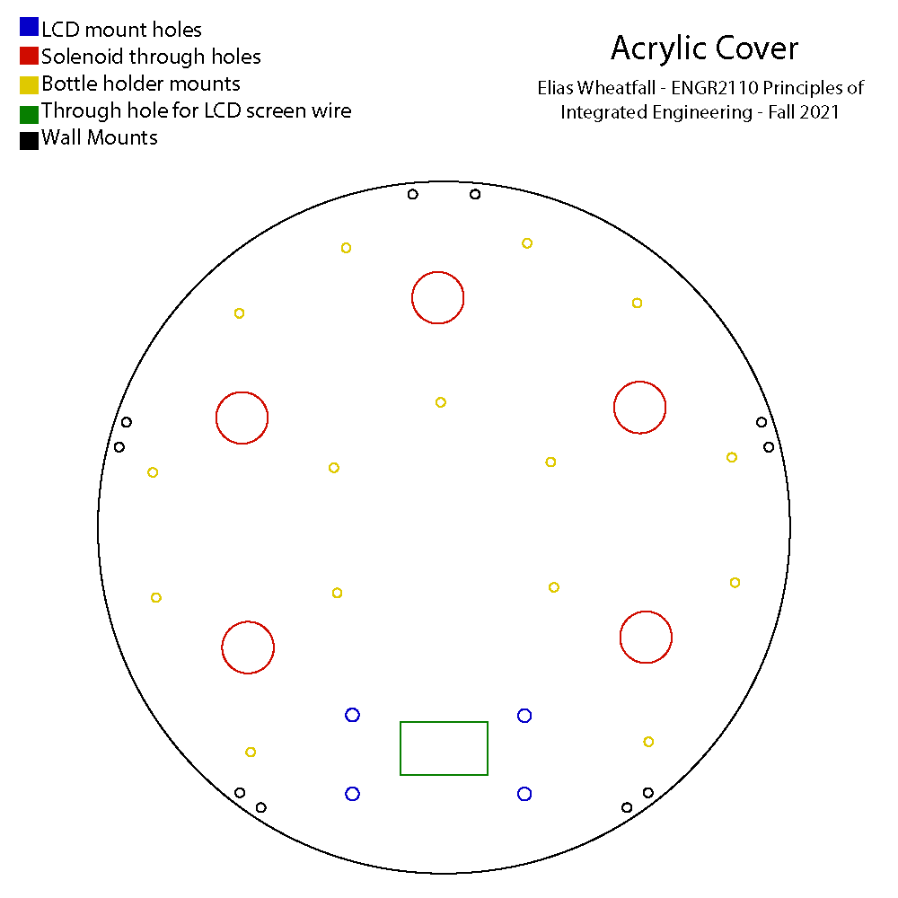
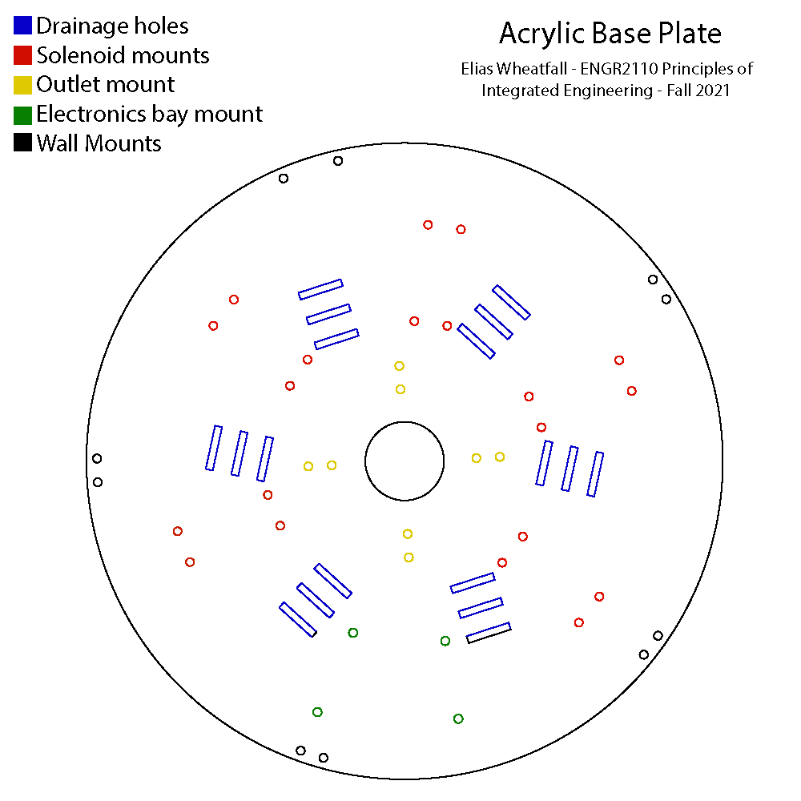
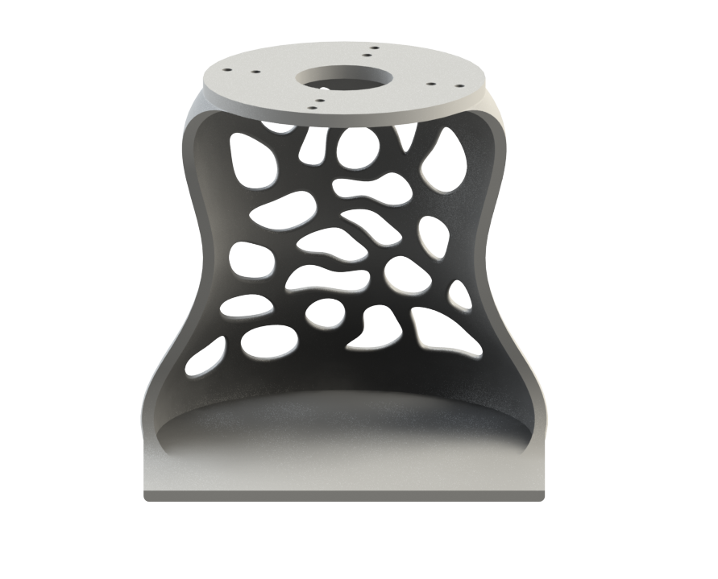
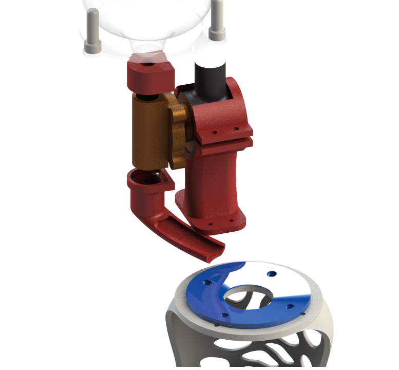
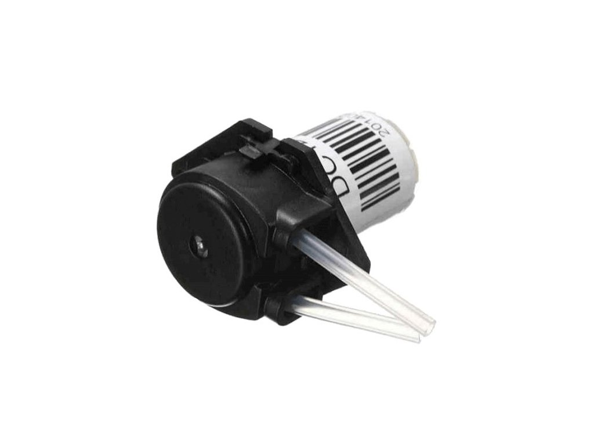
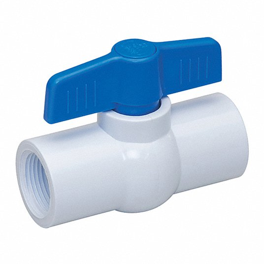
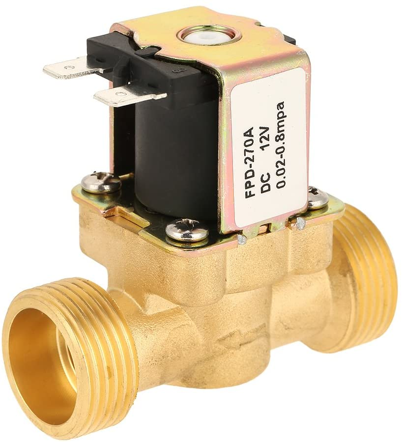

Mechanical Design
Overview
We faced a significant challenge developing food safe methods of moving liquids and keeping electronic systems safe. With the goal to develop an appealing yet compact system, we decided to pivot our system to focus on achieving our goal of accurate measurements and away from food safety. Our ultimate goal was to create a tight, appealing assembly that moved liquid from the bottle quickly to the cup.

We used SolidWorks as our CAD software to create an assembly that helped us visualize the layout of our dispenser and create clearances for the electrical team to work before having to manufacture our parts.

Parts

Acrylic Top Design
The top layer of the assembly went through a series of changes during development. The panel was iterated 5 different times to accommodate different spacing situations for the LCD screen, tubing and mounts.
The final design consists of an acrylic plate laser cut with a variety of slots and holes to accommodate each need. The panel has through holes (shown in black) to screw into the 3D-printed walls. The yellow holes allow screws to mount the standoffs that hold the bottles at the correct height. The blue holes mount the LCD screen standoffs, where the writes travel through the green, rectangular slot. The red through holes allow the tubing from the bottle to travel to each solenoid.
Acrylic Bottom Design
The Acrylic Base Plate is one of the more complicated parts of the system. It served to not only hold the assembly together, but protect the electronics from flooding if there were any leaks, and mount each solenoid in the tightest configuration possible.
The Base consists of a series of patterns revolving around the center. The Solenoids are screwed into a rectangular screw pattern (shown in red). The Receiving Dish is mounted through the base into the Cup Holder (shown in yellow). The electronics bay isolates the water and is mounted onto the base plate (shown in green). The slotted rectangles (shown in blue) allow for liquid to leave the system before flooding or reaching the electronics.


Solenoid Holder Design
The Solenoid Holder is designed to easily slide the solenoid and apply enough clamping force to prevent the solenoid from coming out. Two screws are placed through the top of the holder and tightened to apply clamping force to the solenoid. The bottom of the holder has 4 holes screws that are threaded through to attach the holder to the base.
Housing Walls Design
The wall design contains the largest pivot of the assembly. Originally consisting of a star shaped design using 956g (right) of filament the design was changed to consist of a 3D-Printed frame holding red powdered-coated sheet metal (left). This reduced our filament use to 285g: a 70% reduction in plastic. The wall is also split into two bodies to prevent the need of supports for the entire part. The entire assembly consists of 5 of these walls placed in a circle to form the enclosure of the assembly.
Cup Holder Design
The Cup Holder consists of the most interesting geometry in the system. The cup holder serves to hold a variety of cups and center them where the liquid dispenses.
The middle of the cup holder caves in to hold most common shaped cups in the perfect position to receive liquid.


Exploded View
The exploded view shows an isolated view of how the system works. The liquid originally starts in the bottle and travels through a tube to the first adapter. The liquid there sits until the solenoid is switched to an open state, allowing liquid to pass through. Once liquid travels through it travels down the slide into the receiving dish.
Future Considerations
Our original goal for the project was to create a food safe drink dispenser. We originally did so with tubing that would flow through rubber grommet to and from the solenoid. The tubes however would kink and prevent liquid from flowing pushing us to pivot to our 3D-Printed slide. 3D-Prints can grow bacteria because of the layers in the prints making it not safe for food. However, there are food safe coatings that can make printed food safe which would be a next step for this project.
The assembly is also difficult to assemble and disassemble. A future iteration would consist of magnets holding the top plate down, allowing for easy access to the inside of the assembly, whether than unscrewing and screwing in 10 different screws every time an adjustment needs to be made.
Other Explored Options

Peristaltic pumps were initially investigated. They are great at creating food safe mechanisms because they pinch the outside of a tube without having to interact directly with a liquid. They did not work for the scope of this project because most pumps in our budget could only pump 10ml/min a rate too slow for the scope of our application.
After pivoting from the peristaltic pump we attempted to develop a mechanism that turned valves manually, a much more cost effective way of dispensing liquid than solenoid. However we found that the NEMA 17 stepper motor we had would have to be geared 1:80 to produce enough torque to turn the valve (something slightly difficult to do by hand) and decided to pivot once again.


Originally we purchased this solenoid valve from Amazon, a much smaller solenoid in comparison to our application now. We learned that some solenoids have a minimum working pressure and learned to include looking for key details as such when scoping out parts for our project.
For our project we managed to share CAD files with GrabCAD. Here is a link to view the entire assembly and associated CAD files.